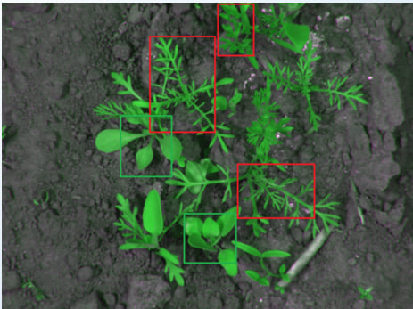
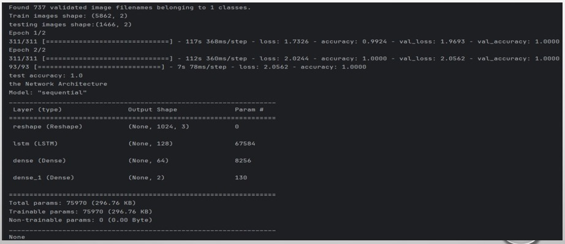
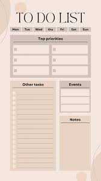
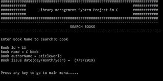

Spandana
Engineering Student
Contact Information
Email: spandanalucky7@gmail.com
Phone: +91 9603009857
LinkedIn: spandana-ventrapragada
GitHub: spandana134
Website: Travelling landing page
Download my resume in PDF format.
Education
KL University
Bachelor of Your Engineering in the department of Artificial Intelligence and Data Science, Expected Graduation: June, 2025
About Me
I am an enthusiastic,dedicated and self motivated person. I have good interpersonal skills, am an excellent team worker. I am a good timekeeper,always willing to learn new skills.
GPA: 9.0
Skills
- Programming Languages:
Python
Java
C
HTML
CSS
JavaScript
SQL - Soft Skills:
Problem Solving
Teamwork
Communication
Adaptability
Creative
Projects
Weed Detection using Deep Learning
Description: Developed a deep learning model for weed detection in agricultural fields, utilizing CNNs with TensorFlow and Keras. Collected and preprocessed field images, fine-tuned pre-trained models, and optimized performance through hyperparameter tuning and cross-validation. Deployed the model on edge devices for real-time detection and integrated it with a decision support system for targeted weed management.
Technologies Used: CNN,LSTM,RNN,VGG
To Do list using full stack web development
Description: Created a full stack To-Do list application using React.js for the front-end and Node.js, Express.js, and MongoDB for the back-end. Implemented features for task management including add, edit, delete, and mark as complete functionalities.
Technologies Used: HTML, CSS, JavaScript, React.js, Node.js, Express.js, MongoDB

Library management using C programming
Description: Developed a console-based library management system in C programming. Implemented functionalities for adding, searching, issuing, returning, and deleting books using file handling for data storage.
Technologies Used: C language
Experience
Internship
Segura Invendors (May, 2023 – July, 2023)
- I worked and trained as a full stack web developer from May 2023 to July 2023, gaining invaluable experience and expanding my skill set. During this period, I completed a real-time project named "To-Do List." This project involved developing a responsive front-end with React.js, where I built interactive components for adding, editing, and managing tasks. On the back-end, I utilized Node.js and Express.js to create RESTful APIs for handling CRUD operations and connected to a MongoDB database for efficient data storage and retrieval. This project allowed me to apply my innovative ideas, improve my problem-solving abilities, and gain hands-on experience with the full stack development process.
Internship
AICTE Internship as Data Analyst (September,2023 – February , 2024)
- During my enriching six-month AICTE Internship as a Data Analyst, I immersed myself in a dynamic learning environment where I honed my analytical skills and expanded my knowledge base. Throughout the internship, I actively engaged in tasks such as data cleaning, transformation, and visualization, using tools like Python, SQL, and Tableau. I gained practical experience in statistical analysis, hypothesis testing, and predictive modeling, which deepened my understanding of data-driven decision-making processes. Additionally, collaborating with cross-functional teams allowed me to apply my analytical insights to real-world scenarios, contributing to meaningful outcomes and fostering my professional growth in the field of data analytics.
Certifications
- TENSORFLOW
- Automation Anywhere Certified Essentials RPA Professional
- Oracle Cloud Infrastructure
- Segura Invendors Internship Certificate
- AICTE Internship Certificate